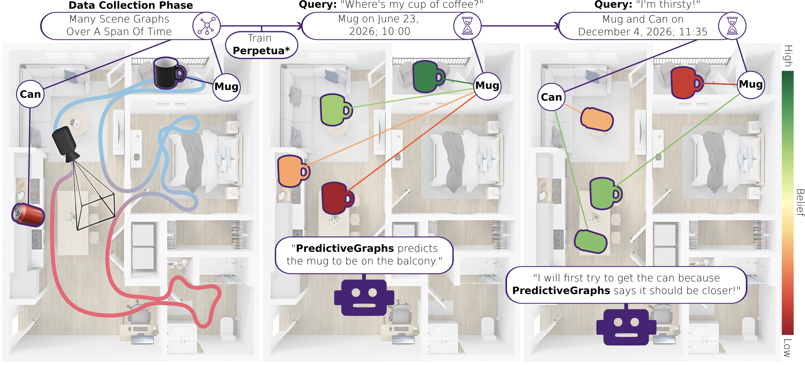
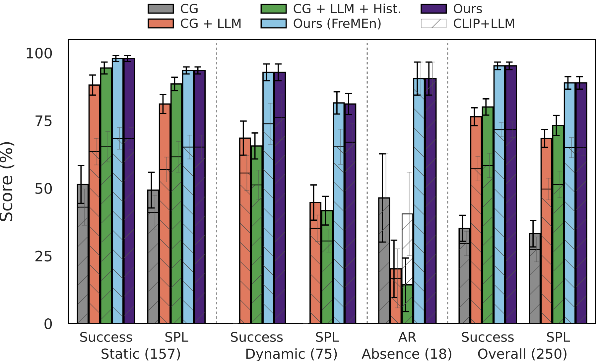
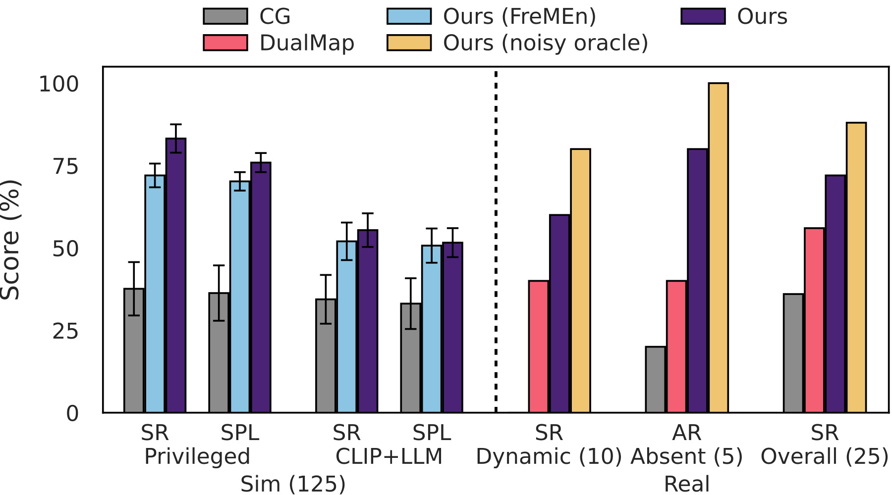
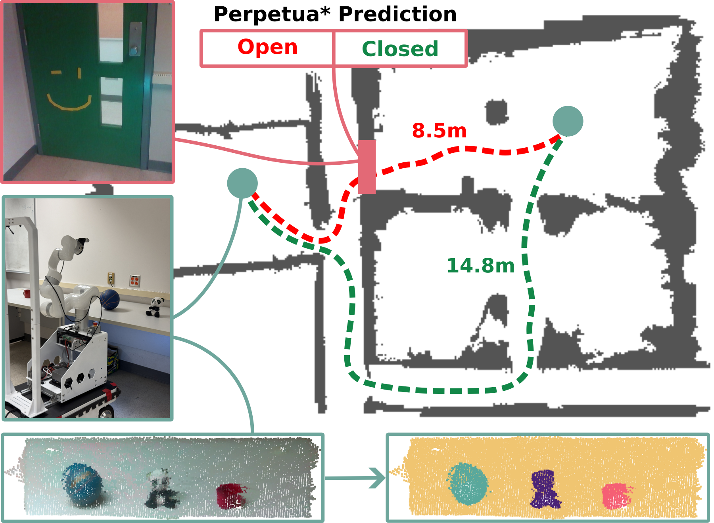

Predictive Spatio-Temporal Scene Graphs for Semi-Static Scenes

Abstract
We have seen tremendous recent progress in our ability to build "spatio-semantic" representations that enable robots to perform complex reasoning across geometry and semantics. However, the vast majority of these methods lack any ability to perform reasoning across time. This is a desirable property in situations where a robot repeatedly observes an environment where instances may change in between observations, but in a structured way. Consider as an example a home environment where the location of a mug typically moves from the cupboard to a countertop to the sink and then back to the cupboard on a daily basis. We should be able to learn this cyclic behavior and use it to predict the state of the mug in the future. In this work, we propose a method that is able to perform this type of tempo-spatio-semantic reasoning. Underpinning the method is a filter, Perpetua*, that performs Bayesian reasoning on the states of the environment that are observed over time. This filter is integrated within a 3D scene graph structure that we call PredictiveGraphs, where nodes represent objects and edges function as Perpetua* filters encoding spatio-semantic relationships. We validate the method in both simulation and real-world dynamic navigation tasks, where our real world experiments consist of an environment that is undergoing semi-static changes at a bi-hourly frequency over a period of three weeks. In both settings, we demonstrate that our method outperforms baselines in predicting future environment states, even in the presence of distributional shifts.
Sample Experiments
Results


